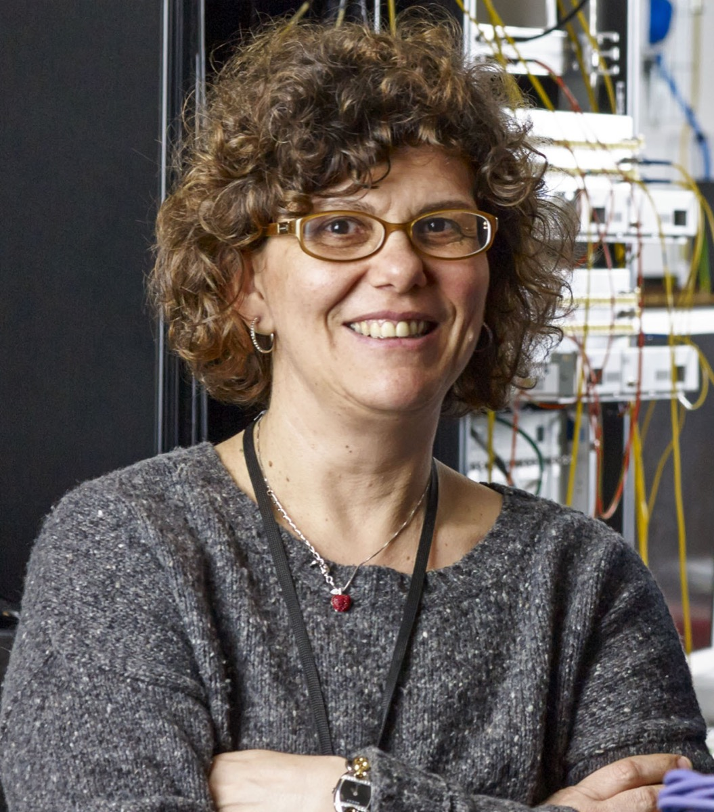
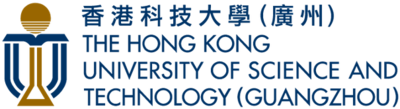
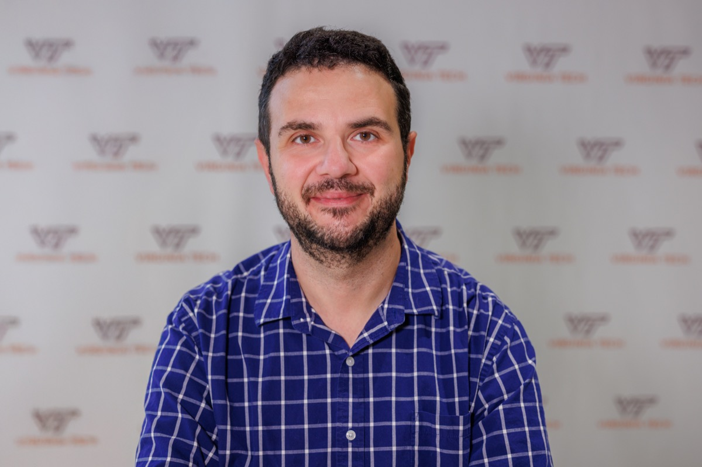
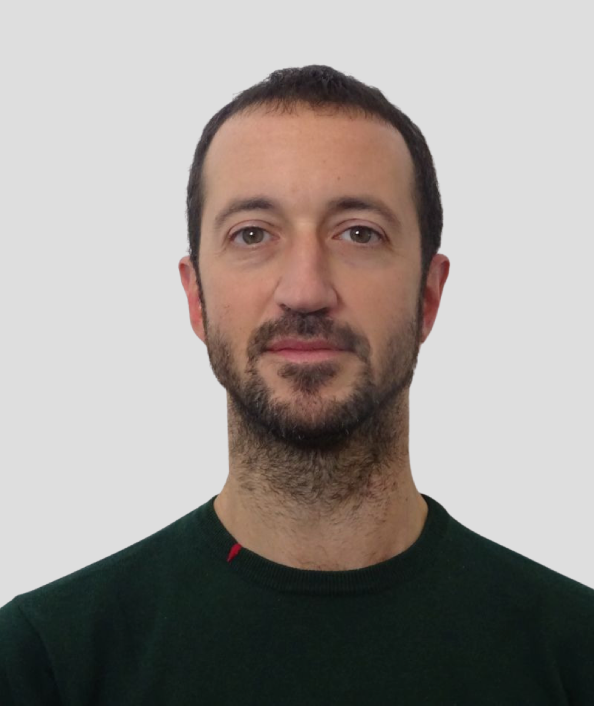
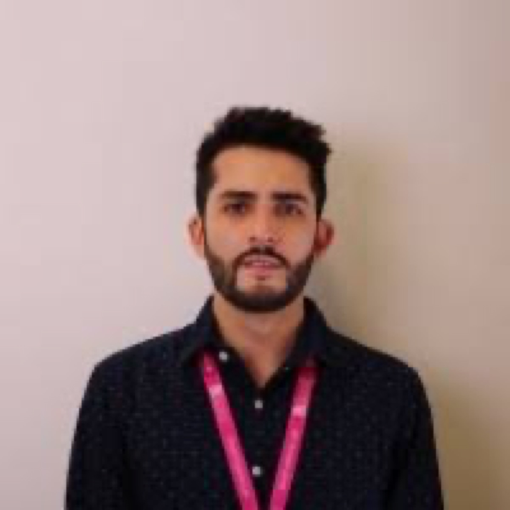
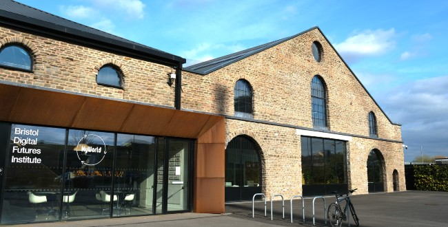

Prof. Dimitra Simeonidou
University of Bristol
Professor and Director of the Smart Internet Lab, with expertise in high-performance networks, programmable networks, future Internet, 5G/6G and smart city infrastructures.
The 1st Seminar of Towards Edge Intelligence
Context-aware and multi-agent approaches for sensing, computation and communication.

About
TEI brings together researchers working across sensing, computation, communication, wireless systems, distributed AI and edge intelligence.
The 1st Seminar of Towards Edge Intelligence is jointly hosted by the University of Bristol and HKUST(GZ). The program features six invited keynote speakers, poster presentations by PhD students, and dedicated networking sessions for researchers working on context-aware and multi-agent approaches for intelligent systems.
Speakers
Six keynote talks spanning programmable networks, wireless AI, distributed optimization, sustainable mobile systems and edge intelligence.

University of Bristol
Professor and Director of the Smart Internet Lab, with expertise in high-performance networks, programmable networks, future Internet, 5G/6G and smart city infrastructures.

Virginia Tech
Rolls Royce Commonwealth Professor in Digital Twin Technology and IEEE Fellow working on wireless networks, machine learning, game theory, semantic communications and cyber-physical systems.
Imperial College London
Tanaka Chair in Internet Technology, with research interests in distributed optimization, machine learning, communication networks, mobile computing and stochastic network models.

CTTC, Spain
Researcher in sustainable mobile networks, green wireless networking, energy harvesting, multi-agent systems, machine learning, green AI and explainable AI.
Linköping University
Associate Professor and Docent working on stochastic modeling, optimization, wireless edge caching, federated learning, function computation and resilient distributed machine learning.

BT Group / University of Bristol
Senior researcher working on cloud and edge AI, federated learning, network intelligence, IoT systems and explainable AI.
Program
A full-day hybrid program with keynote sessions, poster presentation windows, breaks and networking.
Smart Internet Lab, University of Bristol
HKUST(GZ)
PhD Students
TEI invites PhD students to share research in edge intelligence and adjacent areas during the seminar poster sessions.
The seminar program includes poster sessions and networking during the morning coffee break and lunch break. Up to 15 posters will be included in the program. Submissions related to edge intelligence, multi-agent systems, sensing, computation, communication, wireless AI, federated learning and network intelligence are welcome.
Please send your poster to Mr Haokai Yang at haokai.yang@bristol.ac.uk with the title TEI + Name, and attach your poster. We will send the invitation letter once your posters are selected. Deadline is 18th May 2026.
Venue
The in-person seminar will take place in Bristol, with a public online Zoom option for remote participants.

Bristol Digital Futures Institute, University of Bristol, 65 Avon St, Bristol, UK BS2 0PZ.
The venue is reachable via Bristol Airport, or by train from London Paddington to Bristol in approximately 1.5 hours.